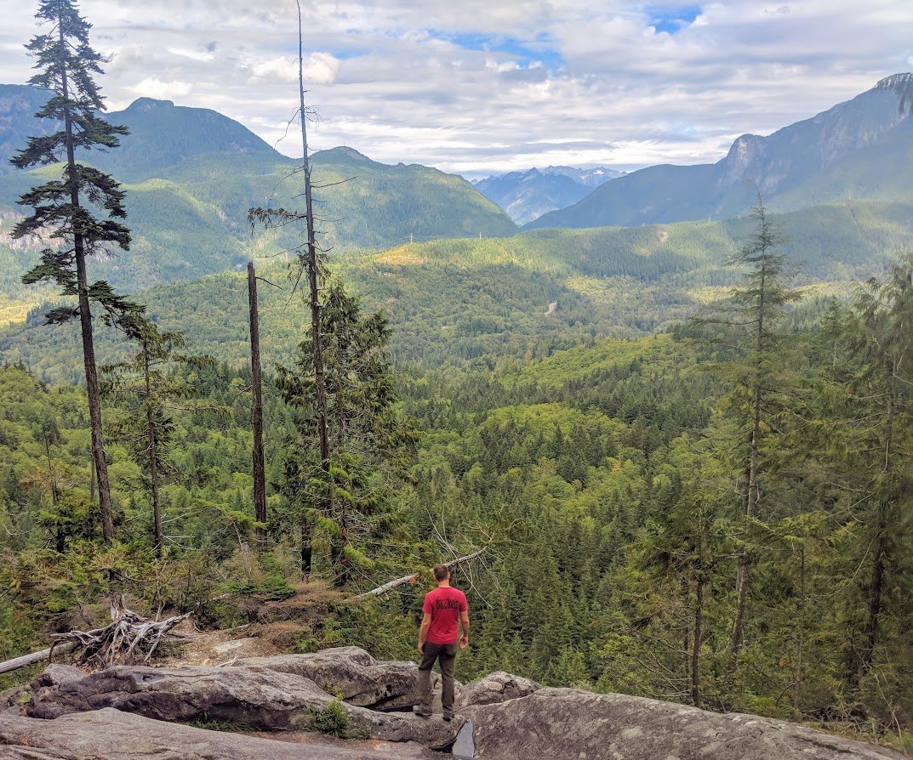
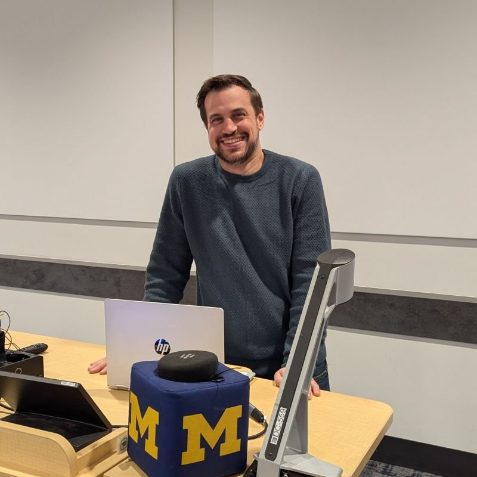
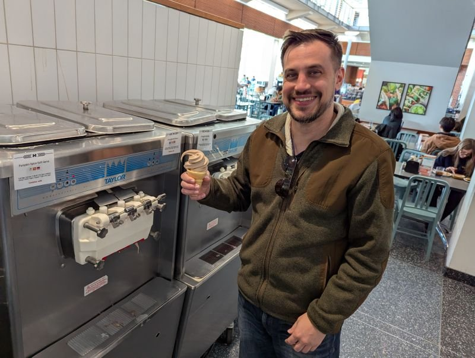
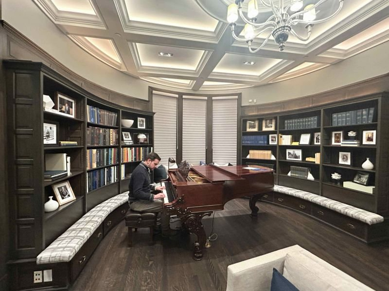
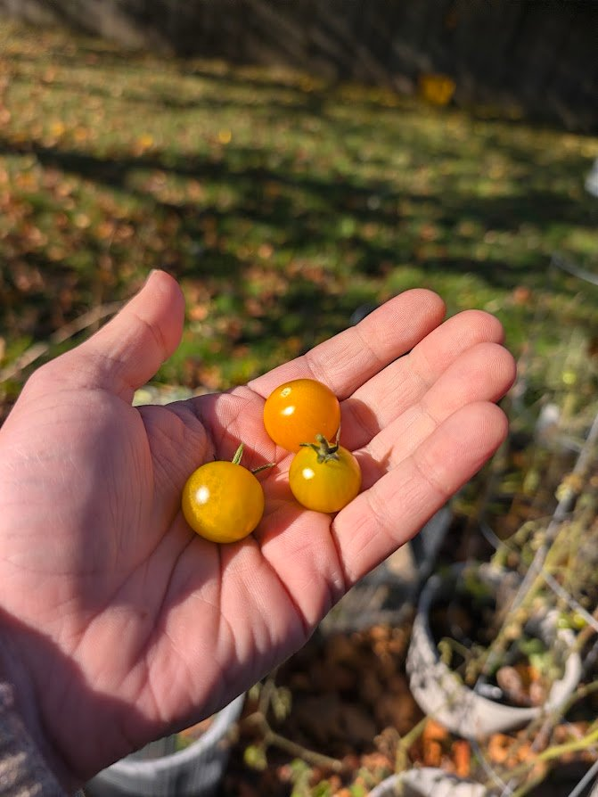
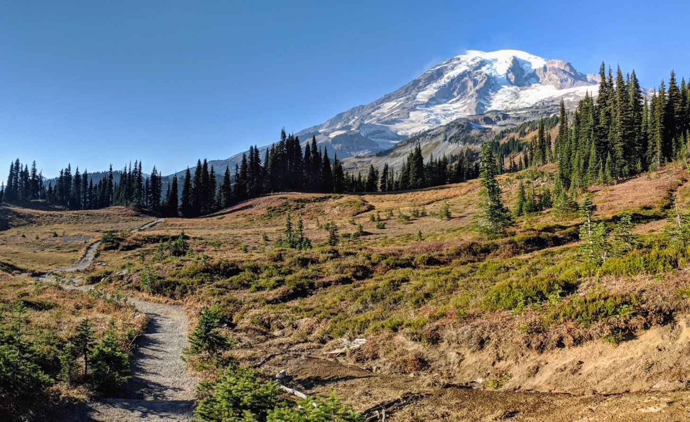

About me
When I'm not doing research, I'm writing music, working in my garden, or out on a trail. As a first-generation college graduate, I make time to mentor students, especially those from non-traditional backgrounds.

Mentoring and teaching
I've coached researchers at three companies and mentored 9 students at the University of Michigan
At work
- WWT: coach two dotted-line reports, a researcher and an intern, in weekly one-on-ones
- AAA game studio: mentored two user researchers and coached cross-functional teams on player research and behavioral data
- ITHAKA: mentored an Associate User Researcher to promotion within one year
At the University of Michigan
- Mentored 5 students through UMSI's Engaged Learning Leaders program during their first client engagements
- Mentored 4 students during their summer internships at the Carr Center in Detroit
- Guest lectured in SI 511 Visual Storytelling (2023, 2025, 2026) and SI 313 Introduction to Quantitative Methods (2025)
- Advised prospective students at multiple UMSI Transfer Student Visit Day Luncheons


Outside of research
I write and play music. I composed the chiptune theme for Hey I Like That Game, a friend's video game podcast, and I'm building a YouTube channel of ambient, cinematic synth and piano music inspired by Vangelis, Tycho, Bonobo, and VIQ.


